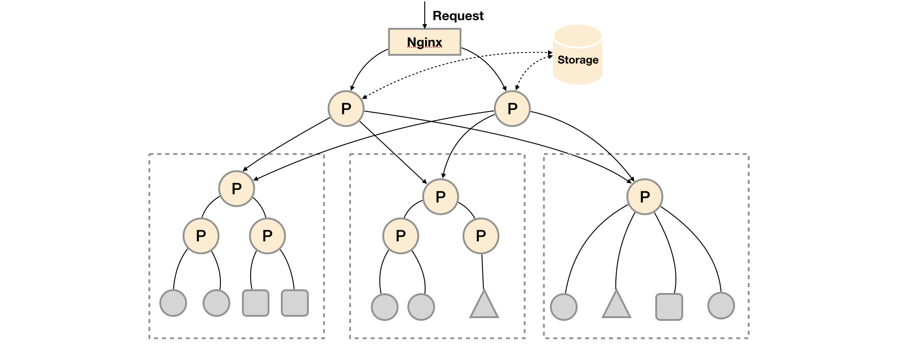

<!DOCTYPE HTML>
<html lang="" >
    <head>
        <meta charset="UTF-8">
        <meta content="text/html; charset=utf-8" http-equiv="Content-Type">
        <title>Prometheus高可用 · GitBook</title>
        <meta http-equiv="X-UA-Compatible" content="IE=edge" />
        <meta name="description" content="">
        <meta name="generator" content="GitBook 3.2.3">
        
        
        
    
    <link rel="stylesheet" href="../gitbook/style.css">

    
            
                
                <link rel="stylesheet" href="../gitbook/gitbook-plugin-highlight/website.css">
                
            
                
                <link rel="stylesheet" href="../gitbook/gitbook-plugin-search/search.css">
                
            
                
                <link rel="stylesheet" href="../gitbook/gitbook-plugin-fontsettings/website.css">
                
            
        

    

    
        
    
        
    
        
    
        
    
        
    
        
    

        
    
    
    <meta name="HandheldFriendly" content="true"/>
    <meta name="viewport" content="width=device-width, initial-scale=1, user-scalable=no">
    <meta name="apple-mobile-web-app-capable" content="yes">
    <meta name="apple-mobile-web-app-status-bar-style" content="black">
    <link rel="apple-touch-icon-precomposed" sizes="152x152" href="../gitbook/images/apple-touch-icon-precomposed-152.png">
    <link rel="shortcut icon" href="../gitbook/images/favicon.ico" type="image/x-icon">

    
    <link rel="next" href="alertmanager-high-availability.html" />
    
    
    <link rel="prev" href="scale-prometheus-with-federation.html" />
    

    </head>
    <body>
        
<div class="book">
    <div class="book-summary">
        
            
<div id="book-search-input" role="search">
    <input type="text" placeholder="Type to search" />
</div>

            
                <nav role="navigation">
                


<ul class="summary">
    
    

    

    
        
        
    
        <li class="chapter " data-level="1.1" data-path="../">
            
                <a href="../">
            
                    
                    Introduction
            
                </a>
            

            
        </li>
    
        <li class="chapter " data-level="1.2" data-path="../Introduction.html">
            
                <a href="../Introduction.html">
            
                    
                    简介
            
                </a>
            

            
        </li>
    

    
        
        <li class="header">Part I - Prometheus基础</li>
        
        
    
        <li class="chapter " data-level="2.1" data-path="../quickstart/">
            
                <a href="../quickstart/">
            
                    
                    第1章 介绍
            
                </a>
            

            
            <ul class="articles">
                
    
        <li class="chapter " data-level="2.1.1" data-path="../quickstart/why-monitor.html">
            
                <a href="../quickstart/why-monitor.html">
            
                    
                    Prometheus简介
            
                </a>
            

            
        </li>
    
        <li class="chapter " data-level="2.1.2" data-path="../quickstart/prometheus-quick-start.html">
            
                <a href="../quickstart/prometheus-quick-start.html">
            
                    
                    初识Prometheus
            
                </a>
            

            
            <ul class="articles">
                
    
        <li class="chapter " data-level="2.1.2.1" data-path="../quickstart/install-prometheus-server.html">
            
                <a href="../quickstart/install-prometheus-server.html">
            
                    
                    安装Prometheus Server
            
                </a>
            

            
        </li>
    
        <li class="chapter " data-level="2.1.2.2" data-path="../quickstart/use-node-exporter.html">
            
                <a href="../quickstart/use-node-exporter.html">
            
                    
                    使用Node Exporter采集主机数据
            
                </a>
            

            
        </li>
    
        <li class="chapter " data-level="2.1.2.3" data-path="../quickstart/promql_quickstart.html">
            
                <a href="../quickstart/promql_quickstart.html">
            
                    
                    使用PromQL查询监控数据
            
                </a>
            

            
        </li>
    
        <li class="chapter " data-level="2.1.2.4" data-path="../quickstart/use-grafana-create-dashboard.html">
            
                <a href="../quickstart/use-grafana-create-dashboard.html">
            
                    
                    监控数据可视化
            
                </a>
            

            
        </li>
    

            </ul>
            
        </li>
    
        <li class="chapter " data-level="2.1.3" data-path="../quickstart/prometheus-job-and-instance.html">
            
                <a href="../quickstart/prometheus-job-and-instance.html">
            
                    
                    任务和实例
            
                </a>
            

            
        </li>
    
        <li class="chapter " data-level="2.1.4" data-path="../quickstart/prometheus-arch.html">
            
                <a href="../quickstart/prometheus-arch.html">
            
                    
                    Prometheus核心组件
            
                </a>
            

            
        </li>
    
        <li class="chapter " data-level="2.1.5" data-path="../quickstart/SUMMARY.html">
            
                <a href="../quickstart/SUMMARY.html">
            
                    
                    小结
            
                </a>
            

            
        </li>
    

            </ul>
            
        </li>
    
        <li class="chapter " data-level="2.2" data-path="../promql/">
            
                <a href="../promql/">
            
                    
                    第2章 探索PromQL
            
                </a>
            

            
            <ul class="articles">
                
    
        <li class="chapter " data-level="2.2.1" data-path="../promql/what-is-prometheus-metrics-and-labels.html">
            
                <a href="../promql/what-is-prometheus-metrics-and-labels.html">
            
                    
                    理解时间序列
            
                </a>
            

            
        </li>
    
        <li class="chapter " data-level="2.2.2" data-path="../promql/prometheus-metrics-types.html">
            
                <a href="../promql/prometheus-metrics-types.html">
            
                    
                    Metrics类型
            
                </a>
            

            
        </li>
    
        <li class="chapter " data-level="2.2.3" data-path="../promql/prometheus-query-language.html">
            
                <a href="../promql/prometheus-query-language.html">
            
                    
                    初识PromQL
            
                </a>
            

            
        </li>
    
        <li class="chapter " data-level="2.2.4" data-path="../promql/prometheus-promql-operators-v2.html">
            
                <a href="../promql/prometheus-promql-operators-v2.html">
            
                    
                    PromQL操作符
            
                </a>
            

            
        </li>
    
        <li class="chapter " data-level="2.2.5" data-path="../promql/prometheus-aggr-ops.html">
            
                <a href="../promql/prometheus-aggr-ops.html">
            
                    
                    PromQL聚合操作
            
                </a>
            

            
        </li>
    
        <li class="chapter " data-level="2.2.6" data-path="../promql/prometheus-promql-functions.html">
            
                <a href="../promql/prometheus-promql-functions.html">
            
                    
                    PromQL内置函数
            
                </a>
            

            
        </li>
    
        <li class="chapter " data-level="2.2.7" data-path="../promql/prometheus-promql-with-http-api.html">
            
                <a href="../promql/prometheus-promql-with-http-api.html">
            
                    
                    在HTTP API中使用PromQL
            
                </a>
            

            
        </li>
    
        <li class="chapter " data-level="2.2.8" data-path="../promql/prometheus-promql-best-praticase.html">
            
                <a href="../promql/prometheus-promql-best-praticase.html">
            
                    
                    最佳实践：4个黄金指标和USE方法
            
                </a>
            

            
        </li>
    
        <li class="chapter " data-level="2.2.9" data-path="../promql/SUMMARY.html">
            
                <a href="../promql/SUMMARY.html">
            
                    
                    小结
            
                </a>
            

            
        </li>
    

            </ul>
            
        </li>
    
        <li class="chapter " data-level="2.3" data-path="../alert/">
            
                <a href="../alert/">
            
                    
                    第3章 Prometheus告警处理
            
                </a>
            

            
            <ul class="articles">
                
    
        <li class="chapter " data-level="2.3.1" data-path="../alert/prometheus-alert-manager-overview.html">
            
                <a href="../alert/prometheus-alert-manager-overview.html">
            
                    
                    Prometheus告警简介
            
                </a>
            

            
        </li>
    
        <li class="chapter " data-level="2.3.2" data-path="../alert/prometheus-alert-rule.html">
            
                <a href="../alert/prometheus-alert-rule.html">
            
                    
                    自定义Prometheus告警规则
            
                </a>
            

            
        </li>
    
        <li class="chapter " data-level="2.3.3" data-path="../alert/install-alert-manager.html">
            
                <a href="../alert/install-alert-manager.html">
            
                    
                    部署AlertManager
            
                </a>
            

            
        </li>
    
        <li class="chapter " data-level="2.3.4" data-path="../alert/alert-manager-config.html">
            
                <a href="../alert/alert-manager-config.html">
            
                    
                    Alertmanager配置概述
            
                </a>
            

            
        </li>
    
        <li class="chapter " data-level="2.3.5" data-path="../alert/alert-manager-route.html">
            
                <a href="../alert/alert-manager-route.html">
            
                    
                    基于标签的告警处理路由
            
                </a>
            

            
        </li>
    
        <li class="chapter " data-level="2.3.6" data-path="../alert/alert-manager-use-receiver.html">
            
                <a href="../alert/alert-manager-use-receiver.html">
            
                    
                    使用Receiver接收告警信息
            
                </a>
            

            
            <ul class="articles">
                
    
        <li class="chapter " data-level="2.3.6.1" data-path="../alert/alert-with-smtp.html">
            
                <a href="../alert/alert-with-smtp.html">
            
                    
                    集成邮件系统
            
                </a>
            

            
        </li>
    
        <li class="chapter " data-level="2.3.6.2" data-path="../alert/alert-with-slack.html">
            
                <a href="../alert/alert-with-slack.html">
            
                    
                    集成Slack
            
                </a>
            

            
        </li>
    
        <li class="chapter " data-level="2.3.6.3" data-path="../alert/alert-with-wechat.html">
            
                <a href="../alert/alert-with-wechat.html">
            
                    
                    集成企业微信
            
                </a>
            

            
        </li>
    
        <li class="chapter " data-level="2.3.6.4" data-path="../alert/alert-manager-extension-with-webhook.html">
            
                <a href="../alert/alert-manager-extension-with-webhook.html">
            
                    
                    集成钉钉：基于Webhook的扩展
            
                </a>
            

            
        </li>
    

            </ul>
            
        </li>
    
        <li class="chapter " data-level="2.3.7" data-path="../alert/alert-template.html">
            
                <a href="../alert/alert-template.html">
            
                    
                    告警模板详解
            
                </a>
            

            
        </li>
    
        <li class="chapter " data-level="2.3.8" data-path="../alert/alert-manager-inhibit.html">
            
                <a href="../alert/alert-manager-inhibit.html">
            
                    
                    屏蔽告警通知
            
                </a>
            

            
        </li>
    
        <li class="chapter " data-level="2.3.9" data-path="../alert/prometheus-recoding-rules.html">
            
                <a href="../alert/prometheus-recoding-rules.html">
            
                    
                    使用Recoding Rules优化性能
            
                </a>
            

            
        </li>
    
        <li class="chapter " data-level="2.3.10" data-path="../alert/SUMMARY.html">
            
                <a href="../alert/SUMMARY.html">
            
                    
                    小结
            
                </a>
            

            
        </li>
    

            </ul>
            
        </li>
    

    
        
        <li class="header">Part II - Prometheus进阶</li>
        
        
    
        <li class="chapter " data-level="3.1" data-path="../exporter/">
            
                <a href="../exporter/">
            
                    
                    第4章 Exporter详解
            
                </a>
            

            
            <ul class="articles">
                
    
        <li class="chapter " data-level="3.1.1" data-path="../exporter/what-is-prometheus-exporter.html">
            
                <a href="../exporter/what-is-prometheus-exporter.html">
            
                    
                    Exporter是什么
            
                </a>
            

            
        </li>
    
        <li class="chapter " data-level="3.1.2" data-path="../exporter/commonly-eporter-usage.html">
            
                <a href="../exporter/commonly-eporter-usage.html">
            
                    
                    常用Exporter
            
                </a>
            

            
            <ul class="articles">
                
    
        <li class="chapter " data-level="3.1.2.1" data-path="../exporter/use-prometheus-monitor-container.html">
            
                <a href="../exporter/use-prometheus-monitor-container.html">
            
                    
                    容器监控：cAdvisor
            
                </a>
            

            
        </li>
    
        <li class="chapter " data-level="3.1.2.2" data-path="../exporter/use-promethues-monitor-mysql.html">
            
                <a href="../exporter/use-promethues-monitor-mysql.html">
            
                    
                    监控MySQL运行状态：MySQLD Exporter
            
                </a>
            

            
        </li>
    
        <li class="chapter " data-level="3.1.2.3" data-path="../exporter/install_blackbox_exporter.html">
            
                <a href="../exporter/install_blackbox_exporter.html">
            
                    
                    网络探测：Blackbox Exporter
            
                </a>
            

            
        </li>
    

            </ul>
            
        </li>
    
        <li class="chapter " data-level="3.1.3" data-path="../exporter/custom_exporter_with_java.html">
            
                <a href="../exporter/custom_exporter_with_java.html">
            
                    
                    使用Java自定义Exporter
            
                </a>
            

            
            <ul class="articles">
                
    
        <li class="chapter " data-level="3.1.3.1" data-path="../exporter/client_library_java.html">
            
                <a href="../exporter/client_library_java.html">
            
                    
                    使用Client Java构建Exporter程序
            
                </a>
            

            
        </li>
    
        <li class="chapter " data-level="3.1.3.2" data-path="../exporter/custom_app_support_prometheus.html">
            
                <a href="../exporter/custom_app_support_prometheus.html">
            
                    
                    在应用中内置Prometheus支持
            
                </a>
            

            
        </li>
    

            </ul>
            
        </li>
    
        <li class="chapter " data-level="3.1.4" data-path="../exporter/SUMMARY.html">
            
                <a href="../exporter/SUMMARY.html">
            
                    
                    小结
            
                </a>
            

            
        </li>
    

            </ul>
            
        </li>
    
        <li class="chapter " data-level="3.2" data-path="../grafana/">
            
                <a href="../grafana/">
            
                    
                    第5章 数据与可视化
            
                </a>
            

            
            <ul class="articles">
                
    
        <li class="chapter " data-level="3.2.1" data-path="../grafana/use-console-template.html">
            
                <a href="../grafana/use-console-template.html">
            
                    
                    使用Console Template
            
                </a>
            

            
        </li>
    
        <li class="chapter " data-level="3.2.2" data-path="../grafana/grafana-intro.html">
            
                <a href="../grafana/grafana-intro.html">
            
                    
                    Grafana的基本概念
            
                </a>
            

            
        </li>
    
        <li class="chapter " data-level="3.2.3" data-path="../grafana/grafana-panels.html">
            
                <a href="../grafana/grafana-panels.html">
            
                    
                    Grafana与数据可视化
            
                </a>
            

            
            <ul class="articles">
                
    
        <li class="chapter " data-level="3.2.3.1" data-path="../grafana/use_graph_panel.html">
            
                <a href="../grafana/use_graph_panel.html">
            
                    
                    变化趋势：Graph面板
            
                </a>
            

            
        </li>
    
        <li class="chapter " data-level="3.2.3.2" data-path="../grafana/use_heatmap_panel.html">
            
                <a href="../grafana/use_heatmap_panel.html">
            
                    
                    分布统计：Heatmap面板
            
                </a>
            

            
        </li>
    
        <li class="chapter " data-level="3.2.3.3" data-path="../grafana/use_singlestat_panel.html">
            
                <a href="../grafana/use_singlestat_panel.html">
            
                    
                    当前状态：SingleStat面板
            
                </a>
            

            
        </li>
    

            </ul>
            
        </li>
    
        <li class="chapter " data-level="3.2.4" data-path="../grafana/templating.html">
            
                <a href="../grafana/templating.html">
            
                    
                    模板化Dashboard
            
                </a>
            

            
        </li>
    
        <li class="chapter " data-level="3.2.5" data-path="../grafana/SUMMARY.html">
            
                <a href="../grafana/SUMMARY.html">
            
                    
                    小结
            
                </a>
            

            
        </li>
    

            </ul>
            
        </li>
    
        <li class="chapter " data-level="3.3" data-path="READMD.html">
            
                <a href="READMD.html">
            
                    
                    第6章 集群与高可用
            
                </a>
            

            
            <ul class="articles">
                
    
        <li class="chapter " data-level="3.3.1" data-path="prometheus-local-storage.html">
            
                <a href="prometheus-local-storage.html">
            
                    
                    本地存储
            
                </a>
            

            
        </li>
    
        <li class="chapter " data-level="3.3.2" data-path="prometheus-remote-storage.html">
            
                <a href="prometheus-remote-storage.html">
            
                    
                    远程存储
            
                </a>
            

            
        </li>
    
        <li class="chapter " data-level="3.3.3" data-path="scale-prometheus-with-federation.html">
            
                <a href="scale-prometheus-with-federation.html">
            
                    
                    联邦集群
            
                </a>
            

            
        </li>
    
        <li class="chapter active" data-level="3.3.4" data-path="prometheus-and-high-availability.html">
            
                <a href="prometheus-and-high-availability.html">
            
                    
                    Prometheus高可用
            
                </a>
            

            
        </li>
    
        <li class="chapter " data-level="3.3.5" data-path="alertmanager-high-availability.html">
            
                <a href="alertmanager-high-availability.html">
            
                    
                    Alertmanager高可用
            
                </a>
            

            
        </li>
    
        <li class="chapter " data-level="3.3.6" data-path="SUMMARY.html">
            
                <a href="SUMMARY.html">
            
                    
                    小结
            
                </a>
            

            
        </li>
    

            </ul>
            
        </li>
    
        <li class="chapter " data-level="3.4" data-path="../sd/">
            
                <a href="../sd/">
            
                    
                    第7章 Prometheus服务发现
            
                </a>
            

            
            <ul class="articles">
                
    
        <li class="chapter " data-level="3.4.1" data-path="../sd/why-need-service-discovery.html">
            
                <a href="../sd/why-need-service-discovery.html">
            
                    
                    Prometheus与服务发现
            
                </a>
            

            
        </li>
    
        <li class="chapter " data-level="3.4.2" data-path="../sd/service-discovery-with-file.html">
            
                <a href="../sd/service-discovery-with-file.html">
            
                    
                    基于文件的服务发现
            
                </a>
            

            
        </li>
    
        <li class="chapter " data-level="3.4.3" data-path="../sd/service-discovery-with-consul.html">
            
                <a href="../sd/service-discovery-with-consul.html">
            
                    
                    基于Consul的服务发现
            
                </a>
            

            
        </li>
    
        <li class="chapter " data-level="3.4.4" data-path="../sd/service-discovery-with-relabel.html">
            
                <a href="../sd/service-discovery-with-relabel.html">
            
                    
                    服务发现与Relabel
            
                </a>
            

            
        </li>
    
        <li class="chapter " data-level="3.4.5" data-path="../sd/SUMMARY.html">
            
                <a href="../sd/SUMMARY.html">
            
                    
                    小结
            
                </a>
            

            
        </li>
    

            </ul>
            
        </li>
    

    
        
        <li class="header">Part III - Prometheus实战</li>
        
        
    
        <li class="chapter " data-level="4.1" data-path="../kubernetes/READMD.html">
            
                <a href="../kubernetes/READMD.html">
            
                    
                    第8章 监控Kubernetes
            
                </a>
            

            
            <ul class="articles">
                
    
        <li class="chapter " data-level="4.1.1" data-path="../kubernetes/kubernetes-with-minikube.html">
            
                <a href="../kubernetes/kubernetes-with-minikube.html">
            
                    
                    初识Kubernetes
            
                </a>
            

            
        </li>
    
        <li class="chapter " data-level="4.1.2" data-path="../kubernetes/deploy-prometheus-in-kubernetes.html">
            
                <a href="../kubernetes/deploy-prometheus-in-kubernetes.html">
            
                    
                    部署Prometheus
            
                </a>
            

            
        </li>
    
        <li class="chapter " data-level="4.1.3" data-path="../kubernetes/service-discovery-with-kubernetes.html">
            
                <a href="../kubernetes/service-discovery-with-kubernetes.html">
            
                    
                    Kubernetes下的服务发现
            
                </a>
            

            
        </li>
    
        <li class="chapter " data-level="4.1.4" data-path="../kubernetes/use-prometheus-monitor-kubernetes.html">
            
                <a href="../kubernetes/use-prometheus-monitor-kubernetes.html">
            
                    
                    监控Kubernetes集群
            
                </a>
            

            
        </li>
    
        <li class="chapter " data-level="4.1.5" data-path="../kubernetes/hap-with-prometheus.html">
            
                <a href="../kubernetes/hap-with-prometheus.html">
            
                    
                    基于Prometheus的弹性伸缩
            
                </a>
            

            
        </li>
    
        <li class="chapter " data-level="4.1.6" data-path="../kubernetes/SUMMARY.html">
            
                <a href="../kubernetes/SUMMARY.html">
            
                    
                    小结
            
                </a>
            

            
        </li>
    

            </ul>
            
        </li>
    
        <li class="chapter " data-level="4.2" data-path="../operator/">
            
                <a href="../operator/">
            
                    
                    第9章 Prometheus Operator
            
                </a>
            

            
            <ul class="articles">
                
    
        <li class="chapter " data-level="4.2.1" data-path="../operator/what-is-prometheus-operator.html">
            
                <a href="../operator/what-is-prometheus-operator.html">
            
                    
                    什么是Prometheus Operator
            
                </a>
            

            
        </li>
    
        <li class="chapter " data-level="4.2.2" data-path="../operator/use-operator-manage-prometheus.html">
            
                <a href="../operator/use-operator-manage-prometheus.html">
            
                    
                    使用Operator管理Prometheus
            
                </a>
            

            
        </li>
    
        <li class="chapter " data-level="4.2.3" data-path="../operator/use-operator-manage-monitor.html">
            
                <a href="../operator/use-operator-manage-monitor.html">
            
                    
                    使用Operator管理监控配置
            
                </a>
            

            
        </li>
    
        <li class="chapter " data-level="4.2.4" data-path="../operator/use-custom-configuration-in-operator.html">
            
                <a href="../operator/use-custom-configuration-in-operator.html">
            
                    
                    在Prometheus Operator中使用自定义配置
            
                </a>
            

            
        </li>
    
        <li class="chapter " data-level="4.2.5" data-path="../operator/SUMMARY.html">
            
                <a href="../operator/SUMMARY.html">
            
                    
                    小结
            
                </a>
            

            
        </li>
    

            </ul>
            
        </li>
    
        <li class="chapter " data-level="4.3" data-path="../REFERENCES.html">
            
                <a href="../REFERENCES.html">
            
                    
                    参考资料
            
                </a>
            

            
        </li>
    

    

    <li class="divider"></li>

    <li>
        <a href="https://www.gitbook.com" target="blank" class="gitbook-link">
            Published with GitBook
        </a>
    </li>
</ul>


                </nav>
            
        
    </div>

    <div class="book-body">
        
            <div class="body-inner">
                
                    

<div class="book-header" role="navigation">
    

    <!-- Title -->
    <h1>
        <i class="fa fa-circle-o-notch fa-spin"></i>
        <a href=".." >Prometheus高可用</a>
    </h1>
</div>


                    <div class="page-wrapper" tabindex="-1" role="main">
                        <div class="page-inner">
                            
<div id="book-search-results">
    <div class="search-noresults">
    
                                <section class="normal markdown-section">
                                
                                <h1 id="prometheus&#x9AD8;&#x53EF;&#x7528;&#x90E8;&#x7F72;">Prometheus&#x9AD8;&#x53EF;&#x7528;&#x90E8;&#x7F72;</h1>
<p>Prometheus&#x7684;&#x672C;&#x5730;&#x5B58;&#x50A8;&#x7ED9;Prometheus&#x5E26;&#x6765;&#x4E86;&#x7B80;&#x5355;&#x9AD8;&#x6548;&#x7684;&#x4F7F;&#x7528;&#x4F53;&#x9A8C;&#xFF0C;&#x53EF;&#x4EE5;&#x8BA9;Promthues&#x5728;&#x5355;&#x8282;&#x70B9;&#x7684;&#x60C5;&#x51B5;&#x4E0B;&#x6EE1;&#x8DB3;&#x5927;&#x90E8;&#x5206;&#x7528;&#x6237;&#x7684;&#x76D1;&#x63A7;&#x9700;&#x6C42;&#x3002;&#x4F46;&#x662F;&#x672C;&#x5730;&#x5B58;&#x50A8;&#x4E5F;&#x540C;&#x65F6;&#x9650;&#x5236;&#x4E86;Prometheus&#x7684;&#x53EF;&#x6269;&#x5C55;&#x6027;&#xFF0C;&#x5E26;&#x6765;&#x4E86;&#x6570;&#x636E;&#x6301;&#x4E45;&#x5316;&#x7B49;&#x4E00;&#x7CFB;&#x5217;&#x7684;&#x95EE;&#x9898;&#x3002;&#x901A;&#x8FC7;Prometheus&#x7684;Remote Storage&#x7279;&#x6027;&#x53EF;&#x4EE5;&#x89E3;&#x51B3;&#x8FD9;&#x4E00;&#x7CFB;&#x5217;&#x95EE;&#x9898;&#xFF0C;&#x5305;&#x62EC;Promthues&#x7684;&#x52A8;&#x6001;&#x6269;&#x5C55;&#xFF0C;&#x4EE5;&#x53CA;&#x5386;&#x53F2;&#x6570;&#x636E;&#x7684;&#x5B58;&#x50A8;&#x3002;</p>
<p>&#x800C;&#x9664;&#x4E86;&#x6570;&#x636E;&#x6301;&#x4E45;&#x5316;&#x95EE;&#x9898;&#x4EE5;&#x5916;&#xFF0C;&#x5F71;&#x54CD;Promthues&#x6027;&#x80FD;&#x8868;&#x73B0;&#x7684;&#x53E6;&#x5916;&#x4E00;&#x4E2A;&#x91CD;&#x8981;&#x56E0;&#x7D20;&#x5C31;&#x662F;&#x6570;&#x636E;&#x91C7;&#x96C6;&#x4EFB;&#x52A1;&#x91CF;&#xFF0C;&#x4EE5;&#x53CA;&#x5355;&#x53F0;Promthues&#x80FD;&#x591F;&#x5904;&#x7406;&#x7684;&#x65F6;&#x95F4;&#x5E8F;&#x5217;&#x6570;&#x3002;&#x56E0;&#x6B64;&#x5F53;&#x76D1;&#x63A7;&#x89C4;&#x6A21;&#x5927;&#x5230;Promthues&#x5355;&#x53F0;&#x65E0;&#x6CD5;&#x6709;&#x6548;&#x5904;&#x7406;&#x7684;&#x60C5;&#x51B5;&#x4E0B;&#xFF0C;&#x53EF;&#x4EE5;&#x9009;&#x62E9;&#x5229;&#x7528;Promthues&#x7684;&#x8054;&#x90A6;&#x96C6;&#x7FA4;&#x7684;&#x7279;&#x6027;&#xFF0C;&#x5C06;Promthues&#x7684;&#x76D1;&#x63A7;&#x4EFB;&#x52A1;&#x5212;&#x5206;&#x5230;&#x4E0D;&#x540C;&#x7684;&#x5B9E;&#x4F8B;&#x5F53;&#x4E2D;&#x3002;</p>
<p>&#x8FD9;&#x4E00;&#x90E8;&#x5206;&#x5C06;&#x91CD;&#x70B9;&#x8BA8;&#x8BBA;Prometheus&#x7684;&#x9AD8;&#x53EF;&#x7528;&#x67B6;&#x6784;&#xFF0C;&#x5E76;&#x4E14;&#x6839;&#x636E;&#x4E0D;&#x540C;&#x7684;&#x4F7F;&#x7528;&#x573A;&#x666F;&#x4ECB;&#x7ECD;&#x4E86;&#x4E00;&#x79CD;&#x5E38;&#x89C1;&#x7684;&#x9AD8;&#x53EF;&#x7528;&#x65B9;&#x6848;&#x3002;</p>
<h2 id="&#x57FA;&#x672C;ha&#xFF1A;&#x670D;&#x52A1;&#x53EF;&#x7528;&#x6027;">&#x57FA;&#x672C;HA&#xFF1A;&#x670D;&#x52A1;&#x53EF;&#x7528;&#x6027;</h2>
<p>&#x7531;&#x4E8E;Promthues&#x7684;Pull&#x673A;&#x5236;&#x7684;&#x8BBE;&#x8BA1;&#xFF0C;&#x4E3A;&#x4E86;&#x786E;&#x4FDD;Promthues&#x670D;&#x52A1;&#x7684;&#x53EF;&#x7528;&#x6027;&#xFF0C;&#x7528;&#x6237;&#x53EA;&#x9700;&#x8981;&#x90E8;&#x7F72;&#x591A;&#x5957;Prometheus Server&#x5B9E;&#x4F8B;&#xFF0C;&#x5E76;&#x4E14;&#x91C7;&#x96C6;&#x76F8;&#x540C;&#x7684;Exporter&#x76EE;&#x6807;&#x5373;&#x53EF;&#x3002;</p>
<p></p>
<p>&#x57FA;&#x672C;&#x7684;HA&#x6A21;&#x5F0F;&#x53EA;&#x80FD;&#x786E;&#x4FDD;Promthues&#x670D;&#x52A1;&#x7684;&#x53EF;&#x7528;&#x6027;&#x95EE;&#x9898;&#xFF0C;&#x4F46;&#x662F;&#x4E0D;&#x89E3;&#x51B3;Prometheus Server&#x4E4B;&#x95F4;&#x7684;&#x6570;&#x636E;&#x4E00;&#x81F4;&#x6027;&#x95EE;&#x9898;&#x4EE5;&#x53CA;&#x6301;&#x4E45;&#x5316;&#x95EE;&#x9898;(&#x6570;&#x636E;&#x4E22;&#x5931;&#x540E;&#x65E0;&#x6CD5;&#x6062;&#x590D;)&#xFF0C;&#x4E5F;&#x65E0;&#x6CD5;&#x8FDB;&#x884C;&#x52A8;&#x6001;&#x7684;&#x6269;&#x5C55;&#x3002;&#x56E0;&#x6B64;&#x8FD9;&#x79CD;&#x90E8;&#x7F72;&#x65B9;&#x5F0F;&#x9002;&#x5408;&#x76D1;&#x63A7;&#x89C4;&#x6A21;&#x4E0D;&#x5927;&#xFF0C;Promthues Server&#x4E5F;&#x4E0D;&#x4F1A;&#x9891;&#x7E41;&#x53D1;&#x751F;&#x8FC1;&#x79FB;&#x7684;&#x60C5;&#x51B5;&#xFF0C;&#x5E76;&#x4E14;&#x53EA;&#x9700;&#x8981;&#x4FDD;&#x5B58;&#x77ED;&#x5468;&#x671F;&#x76D1;&#x63A7;&#x6570;&#x636E;&#x7684;&#x573A;&#x666F;&#x3002;</p>
<h2 id="&#x57FA;&#x672C;ha--&#x8FDC;&#x7A0B;&#x5B58;&#x50A8;">&#x57FA;&#x672C;HA + &#x8FDC;&#x7A0B;&#x5B58;&#x50A8;</h2>
<p>&#x5728;&#x57FA;&#x672C;HA&#x6A21;&#x5F0F;&#x7684;&#x57FA;&#x7840;&#x4E0A;&#x901A;&#x8FC7;&#x6DFB;&#x52A0;Remote Storage&#x5B58;&#x50A8;&#x652F;&#x6301;&#xFF0C;&#x5C06;&#x76D1;&#x63A7;&#x6570;&#x636E;&#x4FDD;&#x5B58;&#x5728;&#x7B2C;&#x4E09;&#x65B9;&#x5B58;&#x50A8;&#x670D;&#x52A1;&#x4E0A;&#x3002;</p>
<p></p>
<p>&#x5728;&#x89E3;&#x51B3;&#x4E86;Promthues&#x670D;&#x52A1;&#x53EF;&#x7528;&#x6027;&#x7684;&#x57FA;&#x7840;&#x4E0A;&#xFF0C;&#x540C;&#x65F6;&#x786E;&#x4FDD;&#x4E86;&#x6570;&#x636E;&#x7684;&#x6301;&#x4E45;&#x5316;&#xFF0C;&#x5F53;Promthues Server&#x53D1;&#x751F;&#x5B95;&#x673A;&#x6216;&#x8005;&#x6570;&#x636E;&#x4E22;&#x5931;&#x7684;&#x60C5;&#x51B5;&#x4E0B;&#xFF0C;&#x53EF;&#x4EE5;&#x5FEB;&#x901F;&#x7684;&#x6062;&#x590D;&#x3002; &#x540C;&#x65F6;Promthues Server&#x53EF;&#x80FD;&#x5F88;&#x597D;&#x7684;&#x8FDB;&#x884C;&#x8FC1;&#x79FB;&#x3002;&#x56E0;&#x6B64;&#xFF0C;&#x8BE5;&#x65B9;&#x6848;&#x9002;&#x7528;&#x4E8E;&#x7528;&#x6237;&#x76D1;&#x63A7;&#x89C4;&#x6A21;&#x4E0D;&#x5927;&#xFF0C;&#x4F46;&#x662F;&#x5E0C;&#x671B;&#x80FD;&#x591F;&#x5C06;&#x76D1;&#x63A7;&#x6570;&#x636E;&#x6301;&#x4E45;&#x5316;&#xFF0C;&#x540C;&#x65F6;&#x80FD;&#x591F;&#x786E;&#x4FDD;Promthues Server&#x7684;&#x53EF;&#x8FC1;&#x79FB;&#x6027;&#x7684;&#x573A;&#x666F;&#x3002;</p>
<h2 id="&#x57FA;&#x672C;ha--&#x8FDC;&#x7A0B;&#x5B58;&#x50A8;--&#x8054;&#x90A6;&#x96C6;&#x7FA4;">&#x57FA;&#x672C;HA + &#x8FDC;&#x7A0B;&#x5B58;&#x50A8; + &#x8054;&#x90A6;&#x96C6;&#x7FA4;</h2>
<p>&#x5F53;&#x5355;&#x53F0;Promthues Server&#x65E0;&#x6CD5;&#x5904;&#x7406;&#x5927;&#x91CF;&#x7684;&#x91C7;&#x96C6;&#x4EFB;&#x52A1;&#x65F6;&#xFF0C;&#x7528;&#x6237;&#x53EF;&#x4EE5;&#x8003;&#x8651;&#x57FA;&#x4E8E;Prometheus&#x8054;&#x90A6;&#x96C6;&#x7FA4;&#x7684;&#x65B9;&#x5F0F;&#x5C06;&#x76D1;&#x63A7;&#x91C7;&#x96C6;&#x4EFB;&#x52A1;&#x5212;&#x5206;&#x5230;&#x4E0D;&#x540C;&#x7684;Promthues&#x5B9E;&#x4F8B;&#x5F53;&#x4E2D;&#x5373;&#x5728;&#x4EFB;&#x52A1;&#x7EA7;&#x522B;&#x529F;&#x80FD;&#x5206;&#x533A;&#x3002;</p>
<p></p>
<p>&#x8FD9;&#x79CD;&#x90E8;&#x7F72;&#x65B9;&#x5F0F;&#x4E00;&#x822C;&#x9002;&#x7528;&#x4E8E;&#x4E24;&#x79CD;&#x573A;&#x666F;&#xFF1A;</p>
<p>&#x573A;&#x666F;&#x4E00;&#xFF1A;&#x5355;&#x6570;&#x636E;&#x4E2D;&#x5FC3; + &#x5927;&#x91CF;&#x7684;&#x91C7;&#x96C6;&#x4EFB;&#x52A1;</p>
<p>&#x8FD9;&#x79CD;&#x573A;&#x666F;&#x4E0B;Promthues&#x7684;&#x6027;&#x80FD;&#x74F6;&#x9888;&#x4E3B;&#x8981;&#x5728;&#x4E8E;&#x5927;&#x91CF;&#x7684;&#x91C7;&#x96C6;&#x4EFB;&#x52A1;&#xFF0C;&#x56E0;&#x6B64;&#x7528;&#x6237;&#x9700;&#x8981;&#x5229;&#x7528;Prometheus&#x8054;&#x90A6;&#x96C6;&#x7FA4;&#x7684;&#x7279;&#x6027;&#xFF0C;&#x5C06;&#x4E0D;&#x540C;&#x7C7B;&#x578B;&#x7684;&#x91C7;&#x96C6;&#x4EFB;&#x52A1;&#x5212;&#x5206;&#x5230;&#x4E0D;&#x540C;&#x7684;Promthues&#x5B50;&#x670D;&#x52A1;&#x4E2D;&#xFF0C;&#x4ECE;&#x800C;&#x5B9E;&#x73B0;&#x529F;&#x80FD;&#x5206;&#x533A;&#x3002;&#x4F8B;&#x5982;&#x4E00;&#x4E2A;Promthues Server&#x8D1F;&#x8D23;&#x91C7;&#x96C6;&#x57FA;&#x7840;&#x8BBE;&#x65BD;&#x76F8;&#x5173;&#x7684;&#x76D1;&#x63A7;&#x6307;&#x6807;&#xFF0C;&#x53E6;&#x5916;&#x4E00;&#x4E2A;Prometheus Server&#x8D1F;&#x8D23;&#x91C7;&#x96C6;&#x5E94;&#x7528;&#x76D1;&#x63A7;&#x6307;&#x6807;&#x3002;&#x518D;&#x6709;&#x4E0A;&#x5C42;Prometheus Server&#x5B9E;&#x73B0;&#x5BF9;&#x6570;&#x636E;&#x7684;&#x6C47;&#x805A;&#x3002;</p>
<p>&#x573A;&#x666F;&#x4E8C;&#xFF1A;&#x591A;&#x6570;&#x636E;&#x4E2D;&#x5FC3;</p>
<p>&#x8FD9;&#x79CD;&#x6A21;&#x5F0F;&#x4E5F;&#x9002;&#x5408;&#x4E0E;&#x591A;&#x6570;&#x636E;&#x4E2D;&#x5FC3;&#x7684;&#x60C5;&#x51B5;&#xFF0C;&#x5F53;Promthues Server&#x65E0;&#x6CD5;&#x76F4;&#x63A5;&#x4E0E;&#x6570;&#x636E;&#x4E2D;&#x5FC3;&#x4E2D;&#x7684;Exporter&#x8FDB;&#x884C;&#x901A;&#x8BAF;&#x65F6;&#xFF0C;&#x5728;&#x6BCF;&#x4E00;&#x4E2A;&#x6570;&#x636E;&#x4E2D;&#x90E8;&#x7F72;&#x4E00;&#x4E2A;&#x5355;&#x72EC;&#x7684;Promthues Server&#x8D1F;&#x8D23;&#x5F53;&#x524D;&#x6570;&#x636E;&#x4E2D;&#x5FC3;&#x7684;&#x91C7;&#x96C6;&#x4EFB;&#x52A1;&#x662F;&#x4E00;&#x4E2A;&#x4E0D;&#x9519;&#x7684;&#x65B9;&#x5F0F;&#x3002;&#x8FD9;&#x6837;&#x53EF;&#x4EE5;&#x907F;&#x514D;&#x7528;&#x6237;&#x8FDB;&#x884C;&#x5927;&#x91CF;&#x7684;&#x7F51;&#x7EDC;&#x914D;&#x7F6E;&#xFF0C;&#x53EA;&#x9700;&#x8981;&#x786E;&#x4FDD;&#x4E3B;Promthues Server&#x5B9E;&#x4F8B;&#x80FD;&#x591F;&#x4E0E;&#x5F53;&#x524D;&#x6570;&#x636E;&#x4E2D;&#x5FC3;&#x7684;Prometheus Server&#x901A;&#x8BAF;&#x5373;&#x53EF;&#x3002; &#x4E2D;&#x5FC3;Promthues Server&#x8D1F;&#x8D23;&#x5B9E;&#x73B0;&#x5BF9;&#x591A;&#x6570;&#x636E;&#x4E2D;&#x5FC3;&#x6570;&#x636E;&#x7684;&#x805A;&#x5408;&#x3002;</p>
<h2 id="&#x6309;&#x7167;&#x5B9E;&#x4F8B;&#x8FDB;&#x884C;&#x529F;&#x80FD;&#x5206;&#x533A;">&#x6309;&#x7167;&#x5B9E;&#x4F8B;&#x8FDB;&#x884C;&#x529F;&#x80FD;&#x5206;&#x533A;</h2>
<p>&#x8FD9;&#x65F6;&#x5728;&#x8003;&#x8651;&#x53E6;&#x5916;&#x4E00;&#x79CD;&#x6781;&#x7AEF;&#x60C5;&#x51B5;&#xFF0C;&#x5373;&#x5355;&#x4E2A;&#x91C7;&#x96C6;&#x4EFB;&#x52A1;&#x7684;Target&#x6570;&#x4E5F;&#x53D8;&#x5F97;&#x975E;&#x5E38;&#x5DE8;&#x5927;&#x3002;&#x8FD9;&#x65F6;&#x7B80;&#x5355;&#x901A;&#x8FC7;&#x8054;&#x90A6;&#x96C6;&#x7FA4;&#x8FDB;&#x884C;&#x529F;&#x80FD;&#x5206;&#x533A;&#xFF0C;Prometheus Server&#x4E5F;&#x65E0;&#x6CD5;&#x6709;&#x6548;&#x5904;&#x7406;&#x65F6;&#x3002;&#x8FD9;&#x79CD;&#x60C5;&#x51B5;&#x53EA;&#x80FD;&#x8003;&#x8651;&#x7EE7;&#x7EED;&#x5728;&#x5B9E;&#x4F8B;&#x7EA7;&#x522B;&#x8FDB;&#x884C;&#x529F;&#x80FD;&#x5212;&#x5206;&#x3002;</p>
<p></p>
<p>&#x5982;&#x4E0A;&#x56FE;&#x6240;&#x793A;&#xFF0C;&#x5C06;&#x7EDF;&#x4E00;&#x4EFB;&#x52A1;&#x7684;&#x4E0D;&#x540C;&#x5B9E;&#x4F8B;&#x7684;&#x76D1;&#x63A7;&#x6570;&#x636E;&#x91C7;&#x96C6;&#x4EFB;&#x52A1;&#x5212;&#x5206;&#x5230;&#x4E0D;&#x540C;&#x7684;Prometheus&#x5B9E;&#x4F8B;&#x3002;&#x901A;&#x8FC7;relabel&#x8BBE;&#x7F6E;&#xFF0C;&#x6211;&#x4EEC;&#x53EF;&#x4EE5;&#x786E;&#x4FDD;&#x5F53;&#x524D;Prometheus Server&#x53EA;&#x6536;&#x96C6;&#x5F53;&#x524D;&#x91C7;&#x96C6;&#x4EFB;&#x52A1;&#x7684;&#x4E00;&#x90E8;&#x5206;&#x5B9E;&#x4F8B;&#x7684;&#x76D1;&#x63A7;&#x6307;&#x6807;&#x3002;</p>
<pre><code>global:
  external_labels:
    slave: 1  # This is the 2nd slave. This prevents clashes between slaves.
scrape_configs:
  - job_name: some_job
    relabel_configs:
    - source_labels: [__address__]
      modulus:       4
      target_label:  __tmp_hash
      action:        hashmod
    - source_labels: [__tmp_hash]
      regex:         ^1$
      action:        keep
</code></pre><p>&#x5E76;&#x4E14;&#x901A;&#x8FC7;&#x5F53;&#x524D;&#x6570;&#x636E;&#x4E2D;&#x5FC3;&#x7684;&#x4E00;&#x4E2A;&#x4E2D;&#x5FC3;Prometheus Server&#x5C06;&#x76D1;&#x63A7;&#x6570;&#x636E;&#x8FDB;&#x884C;&#x805A;&#x5408;&#x5230;&#x4EFB;&#x52A1;&#x7EA7;&#x522B;&#x3002;</p>
<pre><code>- scrape_config:
  - job_name: slaves
    honor_labels: true
    metrics_path: /federate
    params:
      match[]:
        - &apos;{__name__=~&quot;^slave:.*&quot;}&apos;   # Request all slave-level time series
    static_configs:
      - targets:
        - slave0:9090
        - slave1:9090
        - slave3:9090
        - slave4:9090
</code></pre><h2 id="&#x9AD8;&#x53EF;&#x7528;&#x65B9;&#x6848;&#x9009;&#x62E9;">&#x9AD8;&#x53EF;&#x7528;&#x65B9;&#x6848;&#x9009;&#x62E9;</h2>
<p>&#x4E0A;&#x9762;&#x7684;&#x90E8;&#x5206;&#xFF0C;&#x6839;&#x636E;&#x4E0D;&#x540C;&#x7684;&#x573A;&#x666F;&#x6F14;&#x793A;&#x4E86;3&#x79CD;&#x4E0D;&#x540C;&#x7684;&#x9AD8;&#x53EF;&#x7528;&#x90E8;&#x7F72;&#x65B9;&#x6848;&#x3002;&#x5F53;&#x7136;&#x5BF9;&#x4E8E;Promthues&#x90E8;&#x7F72;&#x65B9;&#x6848;&#x9700;&#x8981;&#x7528;&#x6237;&#x6839;&#x636E;&#x76D1;&#x63A7;&#x89C4;&#x6A21;&#x4EE5;&#x53CA;&#x81EA;&#x8EAB;&#x7684;&#x9700;&#x6C42;&#x8FDB;&#x884C;&#x52A8;&#x6001;&#x8C03;&#x6574;&#xFF0C;&#x4E0B;&#x8868;&#x5C55;&#x793A;&#x4E86;Promthues&#x548C;&#x9AD8;&#x53EF;&#x7528;&#x6709;&#x5173;3&#x4E2A;&#x9009;&#x9879;&#x5404;&#x81EA;&#x89E3;&#x51B3;&#x7684;&#x95EE;&#x9898;&#xFF0C;&#x7528;&#x6237;&#x53EF;&#x4EE5;&#x6839;&#x636E;&#x81EA;&#x5DF1;&#x7684;&#x9700;&#x6C42;&#x7075;&#x6D3B;&#x9009;&#x62E9;&#x3002;</p>
<table>
<thead>
<tr>
<th>&#x9009;&#x9879;\&#x9700;&#x6C42;</th>
<th>&#x670D;&#x52A1;&#x53EF;&#x7528;&#x6027;</th>
<th>&#x6570;&#x636E;&#x6301;&#x4E45;&#x5316;</th>
<th>&#x6C34;&#x5E73;&#x6269;&#x5C55;</th>
</tr>
</thead>
<tbody>
<tr>
<td>&#x4E3B;&#x5907;HA</td>
<td>v</td>
<td>x</td>
<td>x</td>
</tr>
<tr>
<td>&#x8FDC;&#x7A0B;&#x5B58;&#x50A8;</td>
<td>x</td>
<td>v</td>
<td>x</td>
</tr>
<tr>
<td>&#x8054;&#x90A6;&#x96C6;&#x7FA4;</td>
<td>x</td>
<td>x</td>
<td>v</td>
</tr>
</tbody>
</table>

                                
                                </section>
                            
    </div>
    <div class="search-results">
        <div class="has-results">
            
            <h1 class="search-results-title"><span class='search-results-count'></span> results matching "<span class='search-query'></span>"</h1>
            <ul class="search-results-list"></ul>
            
        </div>
        <div class="no-results">
            
            <h1 class="search-results-title">No results matching "<span class='search-query'></span>"</h1>
            
        </div>
    </div>
</div>

                        </div>
                    </div>
                
            </div>

            
                
                <a href="scale-prometheus-with-federation.html" class="navigation navigation-prev " aria-label="Previous page: 联邦集群">
                    <i class="fa fa-angle-left"></i>
                </a>
                
                
                <a href="alertmanager-high-availability.html" class="navigation navigation-next " aria-label="Next page: Alertmanager高可用">
                    <i class="fa fa-angle-right"></i>
                </a>
                
            
        
    </div>

    <script>
        var gitbook = gitbook || [];
        gitbook.push(function() {
            gitbook.page.hasChanged({"page":{"title":"Prometheus高可用","level":"3.3.4","depth":2,"next":{"title":"Alertmanager高可用","level":"3.3.5","depth":2,"path":"ha/alertmanager-high-availability.md","ref":"./ha/alertmanager-high-availability.md","articles":[]},"previous":{"title":"联邦集群","level":"3.3.3","depth":2,"path":"ha/scale-prometheus-with-federation.md","ref":"./ha/scale-prometheus-with-federation.md","articles":[]},"dir":"ltr"},"config":{"gitbook":"*","theme":"default","variables":{},"plugins":[],"pluginsConfig":{"highlight":{},"search":{},"lunr":{"maxIndexSize":1000000,"ignoreSpecialCharacters":false},"sharing":{"facebook":true,"twitter":true,"google":false,"weibo":false,"instapaper":false,"vk":false,"all":["facebook","google","twitter","weibo","instapaper"]},"fontsettings":{"theme":"white","family":"sans","size":2},"theme-default":{"styles":{"website":"styles/website.css","pdf":"styles/pdf.css","epub":"styles/epub.css","mobi":"styles/mobi.css","ebook":"styles/ebook.css","print":"styles/print.css"},"showLevel":false}},"structure":{"langs":"LANGS.md","readme":"README.md","glossary":"GLOSSARY.md","summary":"SUMMARY.md"},"pdf":{"pageNumbers":true,"fontSize":12,"fontFamily":"Arial","paperSize":"a4","chapterMark":"pagebreak","pageBreaksBefore":"/","margin":{"right":62,"left":62,"top":56,"bottom":56}},"styles":{"website":"styles/website.css","pdf":"styles/pdf.css","epub":"styles/epub.css","mobi":"styles/mobi.css","ebook":"styles/ebook.css","print":"styles/print.css"}},"file":{"path":"ha/prometheus-and-high-availability.md","mtime":"2019-06-28T14:07:06.496Z","type":"markdown"},"gitbook":{"version":"3.2.3","time":"2019-07-01T12:26:24.645Z"},"basePath":"..","book":{"language":""}});
        });
    </script>
</div>

        
    <script src="../gitbook/gitbook.js"></script>
    <script src="../gitbook/theme.js"></script>
    
        
        <script src="../gitbook/gitbook-plugin-search/search-engine.js"></script>
        
    
        
        <script src="../gitbook/gitbook-plugin-search/search.js"></script>
        
    
        
        <script src="../gitbook/gitbook-plugin-lunr/lunr.min.js"></script>
        
    
        
        <script src="../gitbook/gitbook-plugin-lunr/search-lunr.js"></script>
        
    
        
        <script src="../gitbook/gitbook-plugin-sharing/buttons.js"></script>
        
    
        
        <script src="../gitbook/gitbook-plugin-fontsettings/fontsettings.js"></script>
        
    

    </body>
</html>

